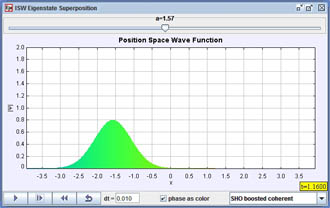

[Screen shot of a SHO superposition state that oscillates back and forth in the well.]
You can access the pre-set initial states for the harmonic oscillator (SHO) via the textbox on the lower-left-hand side of the main simulation panel. These show:
- SHO Two State: Loads: Loads a SHO two-state superposition (equal mix of ground state and first-excited state).
- SHO Squeezed: Loads: Loads a SHO coherent state with an initial average momentum.
- SHO Squeezed Wide: Loads a SHO coherent state with an initial average momentum.
- SHO Boosted Coherent: Loads a SHO coherent state with an initial average momentum.
- SHO Boosted Squeezed: Loads a SHO squeezed state with an initial average momentum.
- SHO Shifted Ground State: Loads the SHO ground state with an initial shift from x = 0.
- SHO Shifted Excited State: Loads the SHO first-excited state with an initial shift from x = 0.
1. What are the ground-state and first-excited-state
energies? Recall that we have scaled the problem such that ħ = m =
1 and chosen ω to be 4.
2. Since the time dependence of energy eigenstates is just, e-iEnt/ħ,
how long does it take the ground state and the first excited state to evolve in
time back to their t = 0 values?
3. Select SHO Two State from the drop down menu. Now set the dt to the ground state period divided by 10. The text
field can accept simple mathematical operations such as /, *, pi, etc. Single
step through the simulation and see if the wave function indeed has the same
period as you calculated in Question 2.
4. Now select each of the SHO wave packets (SHO Squeezed, SHO
Squeezed Wide, SHO Boosted Coherent, SHO Boosted Squeezed, SHO
Shifted Ground State, SHO Shifted Ground State, SHO Shifted
Excited State) from the drop down menu (you may have to scroll down in
the drop down menu first before selecting a state). First look
at all six wave packets. Describe the similarities and differences
between the packets' initial shapes. Now look at the SHO wave packets' time
evolution. Describe what happens to each wave packet as it evolves in time.
5. Are there any special initial wave packets that behave differently than what
you would have expected? How do they behave? Briefly describe what each of
the wave packets time evolution looks like. From your analysis, what is
the difference between a coherent state and a squeezed state?
6. Are there any special wave packets that behave like a particle in a classical
harmonic oscillator?
7. Compare and contrast the ISW wave packets' time evolution to that of the SHO
wave packets' time evolution. If you were given a wave packet and were not
told which well the packet was in, what properties of the wave packet's
evolution would suggest on well or the other?